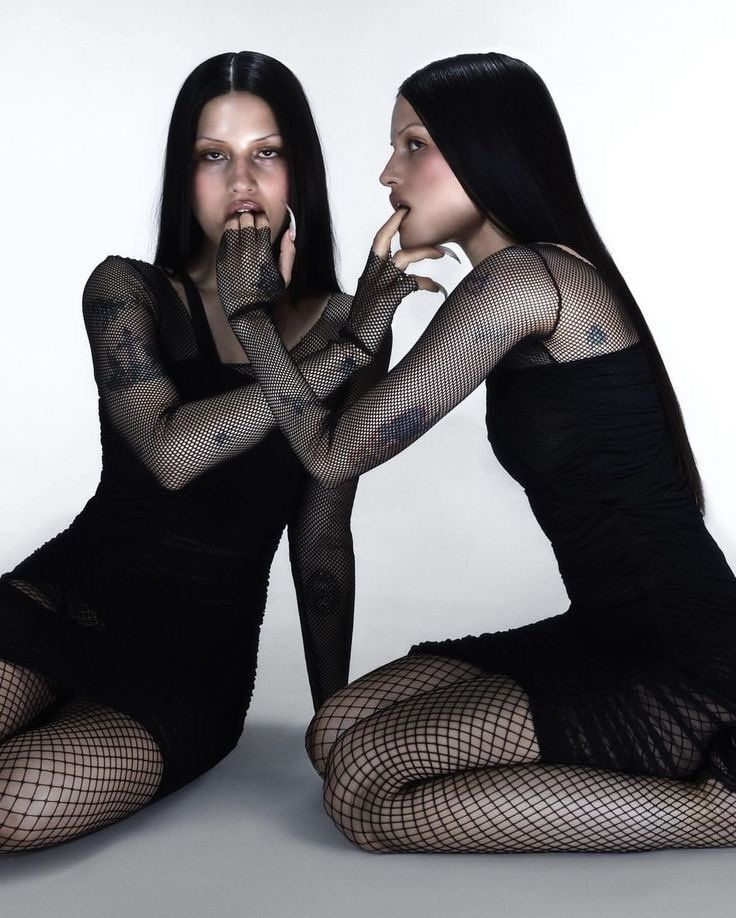

Что такое Дарк Дива?
Дарк Дива — это олицетворение силы, независимости и загадочности. Этот образ включает в себя насыщенные темные оттенки, загадочные украшения и драматичный стиль, сочетающий готические элементы с современной женственностью. Дарк Дива — это уверенная в себе личность, которая использует моду как средство самовыражения и борьбы с будничной серостью.
